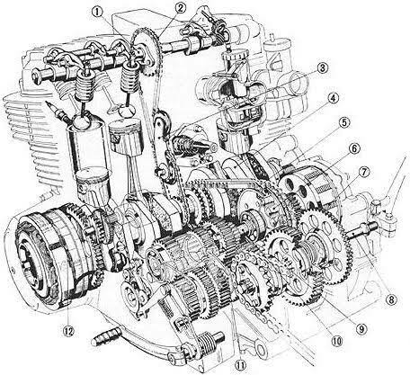

O QUE É MELHORIA DE MOTOR E COMO FUNCIONA
Por: Fernando Felipe da Silva Ribeiro
Melhoria de motor é o conjunto de ajustes, manutenções ou modificações aplicadas a um motor para elevar seu desempenho, eficiência energética ou durabilidade. Na prática, ela busca extrair o máximo rendimento do propulsor conforme o objetivo desejado, como ganhar potência e torque, reduzir o consumo de combustível ou prolongar a vida útil das peças.